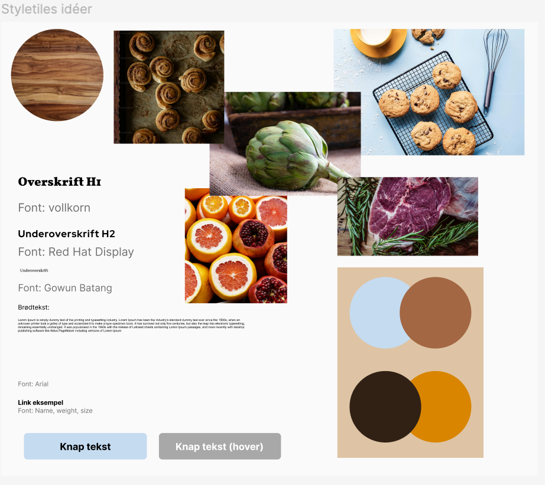

Tema 03_UX
Temabeskrivelse
I tema 3 blev vi introduceret for grundlæggende User Experience, der omhandler brugerens oplevelse på en brugergrænseflade. UX giver en forklaring og forståelse for sammenspillet mellem brugeren og brugergrænsefladen. Vi blev præsenteret for en række teorier og værktøjer som vi så skulle bruger til at researche, designe og teste vores eget emnesite. Med UX får man nogle insights til designvalg, og hvordan man kan videreudvikle brugergrænsefladen ud fra brugerens behov og forventninger. Så man gør oplevelsen behagelig, effektiv og brugervenlig. I tema 3 brugte vi især figmas redskaber til at skabe en god designprocess, og prototype til vores egen hjemmeside. I mit tilfælde handlede min website om at finde madopskrifter til hverdagen.
Hvad har jeg lært
- UX/UI-designerens rolle i design- og arbejdsprocesser
- Vi fik en masse viden om UX/UI konventioner, usability og det at lave og teste en prototype
- Det at indsamle, udvælg og tilpasse indhold i form af tekst og billeder
- Vi lærte hvordan med researcher til et design, og det at søge information i form af deskresearch
- Så lærte vi at bruge nogle af de centrale metoder og værktøjer i en designprocess. Vi lavede egne moodboards, lo-fi(low fidelity) og hi-fi(high fidelity), styletile, idégenerering i form af sketching bla.(lightning sketch, crazy 8, solutionsketch)
- Grundlæggende brugertest. Vi lavede 5-sekunders, tænke-højt og lighthouse tests
Opgaver
- 03.01.01 Emnesite
Gennemgang af tema
Research og idéudvikling
Temaet 03_UX skulle vi udarbejde en nyt site ud fra et valgfrit emne. Jeg valgte at lave et site hvor man kunne finde inspiration til madlavning vha. opskrifter. Vi startede forløbet med at få en masse grundlæggende teori om brugeroplevelse og brugergrænseflader. Vi snakkede om designmetoder og designprocess ud fra UX/UI synsvinkel. Vi startede med at lave lidt kort idégenrering i form af brainstorm og mindmip, med tanke på at finde en idé til et emnesite. Herfter brugte vi en af research metoder, deskresearch, til at finde inspiration til designet, men også til at få et bedre synspunkt på hvad websitet skal omhandle for at ramme brugerne og målgruppen.
Wireframes og prototyping
Efter at have fundet emne og lavet en masse research var vi klar til at fortsætte designprocessen ved at lave wireframes. Wireframes visualisere sites indhold, så man nemt kan se hvor billeder, tekst og andre elementer er placeret på siderne. Man skelner her mellem LoFi og HiFi wireframes. LoFi eller Low Fidelity viser ikke beskrivende tekst eller billeder, tilgengæld er de hurtigere og lave og nemmere at endre når man eksempelvis tester eller arbejder flere mennesker på samme brugergrænseflade, men mere om det senere. HiFi eller High Fidelity wireframes er med de rigtige billeder og tekst, så man bedre kan visualisere brugergrænsefladen. Det er her nemmere at tage konkrete designbeslutninger, så som vurdering af om man har det rigtige indhold, fonte og farver mm. Vi lavede begge typer, og gjorde senere vores HiFi wireframes klikbar, og dermed en prototype af hele brugergrænsefladen. Figma har et indstilling så man kan få fremvist sin prototype. Det gør at man kan se hele sin brugergrænseflade og navigere rundt på siderne som var det en rigtig hjemmeside. Her lavede vi nogle forskellige test, 5 sekunders test og tænke-højt test, for at tjekke både om der er nogle fejl eller problemmer i designet, men også om brugervenligheden virker optimalt. Det smart at teste her i processen fordi prototyper er nemmere at lave og ændre end kodede sites.
Styletile og layoutdiagram
Inden vi begyndte at kode emnesitet, kiggede vi på styletiles og layoutdiagrammer. Styletile er en god måde at visualisere sin valgte stil, i form af indhold, så som billeder, tekst og farver. Det er en god måde at sikre sig at det man designer er konsistent og brugervenligt. Herefter lavede vi vores layoutdiagrammer, som sammen med styletile og prototype, hjælper med opsætningen og designet at selve sitet.
Tests
I den sidste del af 03_UX forløbet lærte vi om test af det færdige site. Det gjorde vi ved hjælp af en lighthouse test, som tjekker brugervenligheden på sitet. Man gør det ved at inspicere sin website i Google Chrome, og så analysere browseren om indholdet fungerer ordentligt på sitet. Den tjekker bl.a. farvekontraster og loading tid på siden, som kan være med til at gøre brugervenligheden dårligere. I sidste ende skulle jeg bare ændre mine billeders format fra .png til .webp, som er et billedeformat der fylder mindre, hvilket gør at siden er hurtigere til at loade.
Som en afslutning, skulle vi fremlægge vores designprocess i små grupper, hvilket jeg gjorde ved hjælp af powerpoint. Jeg fik mange brugbare indsigter og observationer, som jeg kunne have brugt til at videreudvikle mit site, ved at fremlægge og få andres feeback.